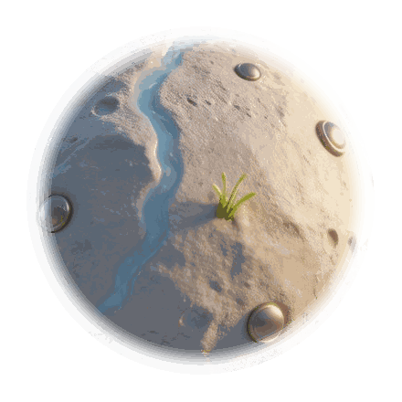

About
Software Engineering Student
把一个自律想法，做成可体验、可展示、可迭代的产品。
我是唐乐，软件工程专业本科生。当前重点项目是 星途自律舱：一款把运动、饮食、学习、工作、计划、睡眠打卡 转化为星球生态成长的微信小程序。

6
生态维度
云开发
登录、打卡、统计同步
这个项目从一个“打卡工具”出发，逐步设计成目标设定、计划管理、打卡反馈、 星光奖励、生态区成长、成就墙和云端同步的完整体验。它既展示工程能力， 也展示产品思考和视觉落地能力。
Featured Project
星途自律舱
星球养成式自律打卡微信小程序。

从荒芜星到生态星
用户每完成一次行动，星球就多一束光。
目标驱动打卡
先选择阶段目标，再生成今日计划，避免用户一进来只看到机械按钮。
六类生态区
运动、饮食、学习、工作、计划、睡眠分别对应建筑和生态成长。
奖励与成就
打卡后即时结算星光，六项完成后开启宝箱，并沉淀成就徽章。
云开发接入
使用微信云函数处理登录、打卡提交、统计面板、资料更新与数据导出。


Skills
项目里能看到的能力
JavaScript
微信小程序
云开发
云函数
UI/UX 设计
素材压缩
数据建模
Node Test
Build Process
我在这个项目里完成了什么
- 需求拆解 把“自律打卡”拆成目标、计划、行动、反馈、成长、复盘六个环节。
- 体验设计 设计星球启动、命名引导、生态区入口、宝箱奖励和成就墙。
- 工程实现 完成原生小程序页面、组件、工具函数、云函数目录和测试用例。
- 性能整理 把大图、视频和源素材分离，压缩首屏资源，避免小程序包体超限。
Contact